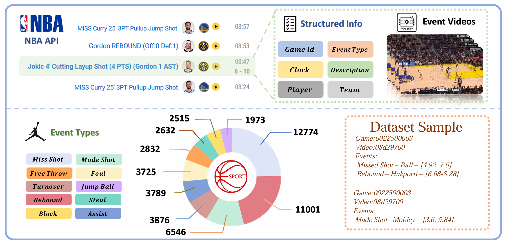
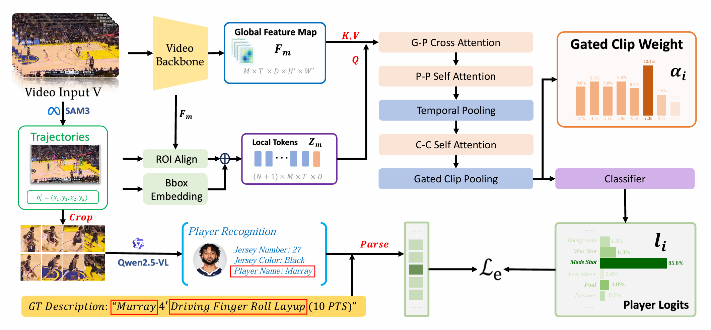
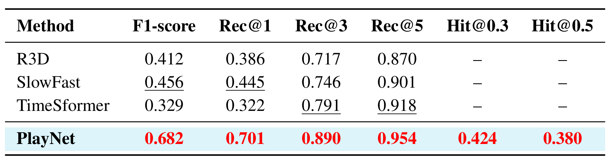
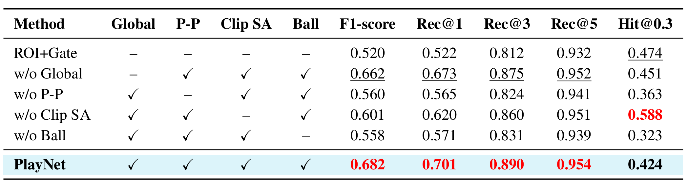
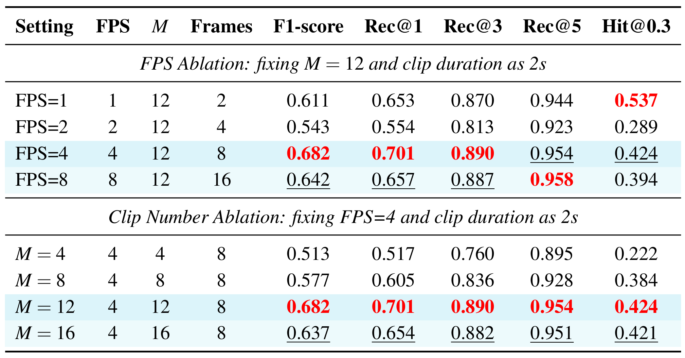
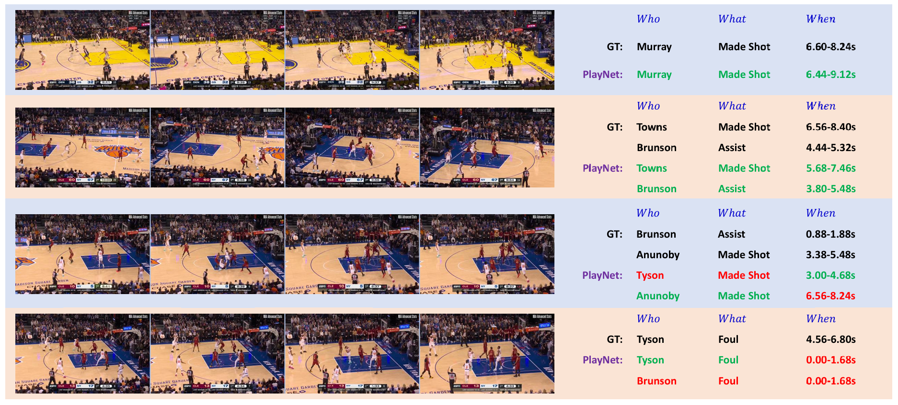

Abstract
Comprehensive basketball video understanding requires resolving not only what event occurs, but also who is responsible and when the key evidence appears. However, existing methods typically treat spatial perception and semantic recognition as isolated tasks, failing to ground events to individual players or pinpoint their temporal boundaries within complex collective dynamics. To bridge this gap, we introduce BasketEvent, a player-centric basketball event understanding dataset curated from real NBA broadcasts. In BasketEvent, event labels are grounded to the responsible players, and a manually annotated subset of 1,000 samples with precise event intervals is provided to evaluate temporal evidence localization. Based on this data, we propose PlayNet, a player-centric reasoning framework that maps basketball videos to player-level event predictions with temporal evidence. Concretely, PlayNet tracks key entities, associates player identities, and reasons about events by modeling player-player, player-ball, and global court interactions, while aggregating sparse temporal evidence via gated pooling. Extensive experiments demonstrate that PlayNet significantly outperforms representative video-level and crop-based baselines, proving the superiority of player-centric modeling for fine-grained sports video understanding. Our data, code, and models will be made publicly available.
Dataset
BasketEvent is a player-centric basketball event understanding dataset curated from real NBA broadcasts. Starting from official NBA play-by-play records, we collect event-centered video clips and normalize structured metadata into 10 representative event categories: Missed Shot, Made Shot, Free Throw, Foul, Turnover, Jump Ball, Rebound, Steal, Block, and Assist. Each event is grounded to the responsible player, enabling models to reason about not only what happens, but also who performs the event.
The dataset contains approximately 35K videos, 90.6 hours of broadcast footage, and 51K player-level samples. To evaluate generalization, BasketEvent is split at the game level, with 189 games for training and 37 unseen games for testing. We further provide a manually annotated temporal evaluation subset of 1,000 player-level samples, where each sample includes precise start and end timestamps for the target event, supporting evaluation of when the key evidence appears.

Method
We propose PlayNet, a player-centric framework that predicts who-what-when event tuples from basketball videos. PlayNet grounds players and the ball, associates player identities, and extracts trajectory-guided features for each visual entity.
The model reasons over global-player, player-player, and player-ball interactions, then uses gated temporal pooling to focus on decisive moments and localize when the event evidence occurs.

Main Results
We compare PlayNet with representative crop-based video baselines, including R3D, SlowFast, and TimeSformer. PlayNet consistently achieves the best recognition performance on BasketEvent, improving F1-score from 0.456 to 0.682 and Rec@1 from 0.445 to 0.701 over the strongest baseline.
These results show that player-centric reasoning is more effective than isolated player crops. PlayNet also achieves 0.424 Hit@0.3 and 0.380 Hit@0.5 for localizing when key evidence appears.

Ablation Study
Component Ablation
Removing key components consistently hurts recognition performance. Compared with the simple ROI+Gate baseline, full PlayNet improves F1-score from 0.520 to 0.682, showing the importance of global context, player-player interaction, and ball dynamics.

Sampling Ablation
We study the effect of frame rate and clip number. The setting FPS=4 and M=12 gives the best overall recognition result, balancing motion detail and temporal coverage.

Qualitative Examples
These examples show PlayNet predictions on BasketEvent videos. For each case, the model predicts who performs the event, what event occurs, and when the supporting evidence appears.
